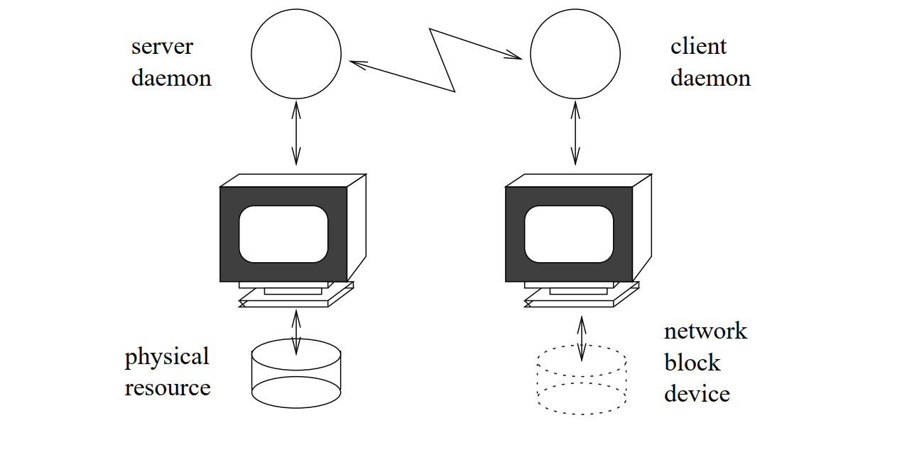
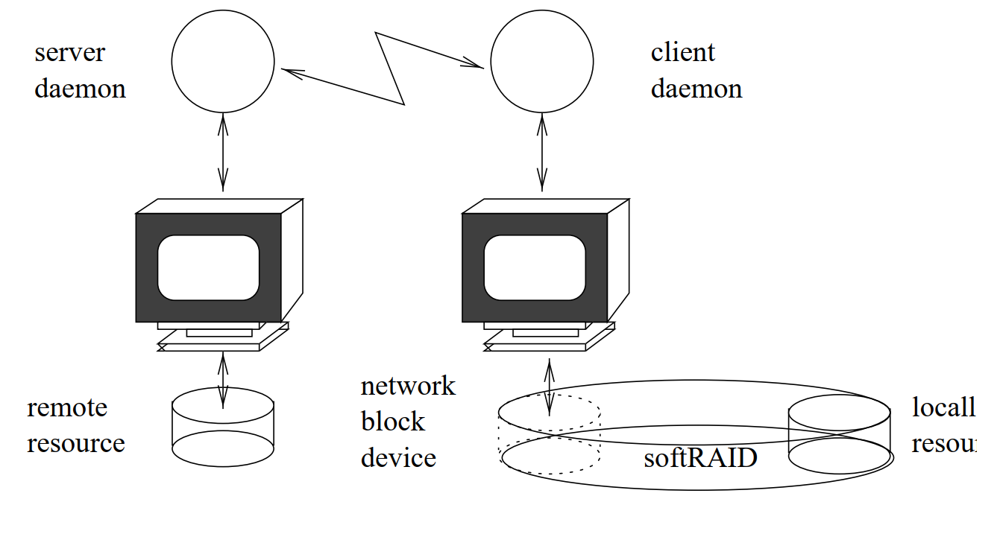
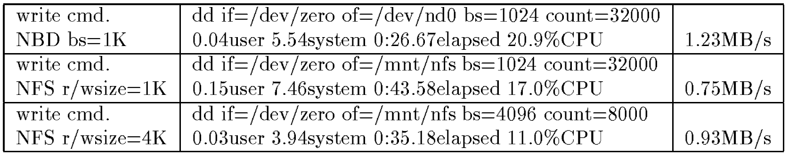
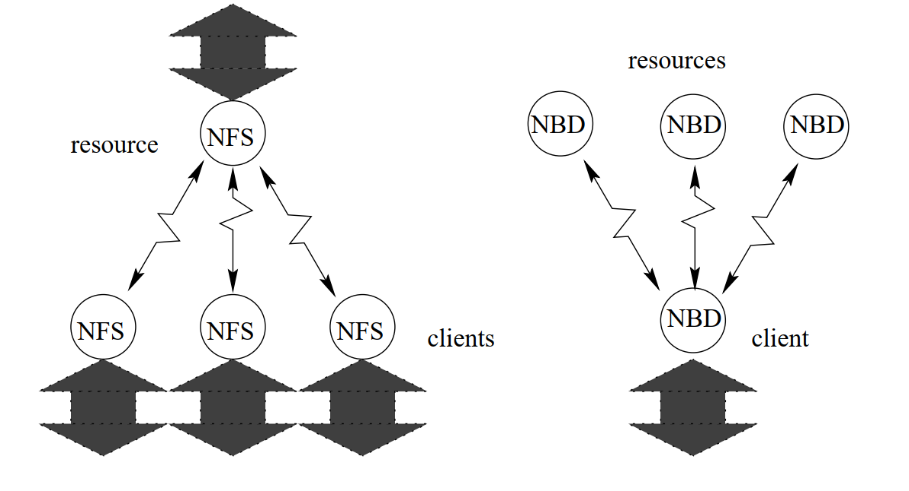

Network Block Device
Ngô Minh Khánh - Phòng PMHT - TTVTBR - 11/2022
Giới thiệu về Network Block Device (NBD)
Network Block Device (NDB) được viết đầu tiên bởi Pavel Machek vào tháng 4 năm 1997 trên Linux kernel phiên bản 2.1.55. Sau đó NDB tiếp tục được phát triển thêm các phiên bản phù hợp với các kernel 57, 101, 111 và 132 (tính đến năm 2000).
Network Block Device là một kỹ thuật lưu trữ dữ liệu từ xa được sử dụng trên các hệ thống máy tính Linux và Unix, cho phép một thiết bị Client truy cập vào kho dữ liệu trên một Server từ xa. Khi thiết bị Client đã thiết lập NBD, nó sẽ hoạt động như thể có một ổ đĩa thực sự trên phía Client chứ không phải ở một Server nào đó trên mạng.
NBD ở phía Server có thể là một đĩa cứng thực tế hoặc là một loại tệp đặc biệt có thể được truy cập như thể nó là một đĩa. Mặc dù chậm hơn đĩa cứng cục bộ, nhưng phương pháp này hữu ích cho một số trường hợp, chẳng hạn như backup dữ liệu hoặc cung cấp khả năng lưu trữ cho một thiết bị không có hoặc có bộ nhớ lưu trữ nhỏ.
Server chạy một phần mềm nhỏ, được gọi là daemon, cho phép Client truy cập vào mount tới thiết bị lưu trữ.

NBD có thể được triển khai cùng với công nghệ RAID để thiết lập một số kiểu sao chép/backup bộ nhớ giữa clietn và server. Với RAID0, có thể chia dữ liệu lên các bộ nhớ để có thể đạt được hiệu năng đọc/ghi và dung lượng lưu trữ lớn hơn. Còn với RAID1, dữ liệu trên một bộ nhớ được sao chép đồng thời trên bất kỳ bộ nhớ nào khác, cung cấp một bản sao lưu có thể truy cập tức thì nếu bất kỳ đĩa nào bị lỗi.

So sánh NBD và NFS
Network Block Device (NBD) có những đặc điểm tương tự với kỹ thuật Network File System (NFS). Một thí nghiệm được thực hiện vào năm 1999 và sử dụng phiên bản NBD driver ban đầu của Pavel chỉ ra rằng việc mount một file Linux EXT2 bằng NBD cho tốc độ nhanh hơn sử dụng NFS (Network File System) trên cùng một thiết bị.
Thông qua thí nghiệm việc mount file bằng NBD trong các điều kiện mặc định giống với NFS với độ lớn bộ đệm xấp xỉ 1.5KB, gấp 1,5 lần kích thước bộ đệm mặc định NFS là 1KB. Thêm vào đó NFS sử dụng giao thức UDP còn NBD sử dụng giao thức TCP. UDP là phương pháp “truyền và quên”, nên đôi khi dữ liệu truyền có thể bị mất. Ngược lại, TCP thiết lập một kết nối dự trên tiến trình bắt tay 3 bước, do đó đảm bảo dữ liệu NBD được đọc và ghi chính xác.

Cả NFS và NBD đều có cấu trúc liên kết dạng hình sao. Tuy nhiên, NFS có server được đặt ở vị trí trung tâm và kết nối với nhiều client, trong khi đó NBD với công nghệ RAID cung cấp cấu trúc ngược lại - một client kết nối tới nhiều server. Điều năng cho phép client tăng khả năng lưu trữ cũng như backup và truy cập lại dữ liệu ngày khi một bộ nhớ trên một server bất kỳ bị hỏng.

Thiết lập Network Block Device dựa trên filesystem
Cấu hình NDB ở phía Server.
Các bước thực hiện cấu hình phía Server:
Cài đặt NDB Server.
apt-get install nbd-server
Tạo nội dung tệp.
dd if=/dev/zero of=/mnt/nbd1 bs=1024 count=36000
mke2fs /mnt/nbd1
Chạy NDB Server daemon.
(Syntax: nbd-server port-number filename/filesystem)
nbd-server 1043 /mnt/nbd1
Cấu hình NDB ở phía Client
Các bước thực hiện cấu hình phía Client:
Cài đặt NBD Client.
apt-get install nbd-client
Tạo filesytem trên thiết bị Client.
(Syntax: nbd-client server-ip server-port filename/filesystem)
nbd-client 192.168.1.11 1043 /mnt/nbd1
Starting NBD client process: Connecting...Negotiation: ..size = 36000KB bs=1024, sz=36000
connected /mnt/nbd
Activating...
fsck 1.39-WIP (31-Dec-2005)
/mnt/nbd: Superblock last write time is in the future. FIXED. /mnt/nbd has gone 49716 days without being checked, check forced.
/mnt/nbd1: |===============================| 56.0%
/mnt/nbd1: |===============================| 100.0%
Mount file phía Client
mkdir /rem_space
mount /mnt/nbd1 /rem_space
Lấy những thay đổi phía Client trên Server
mount -o loop /mnt/nbd1 /client_changes
Truy cập bộ nhớ từ xa như là bộ nhớ SWAP
Cấu hình phía Server.
Tạo file .
dd if=/dev/zero of=/mnt/nbd2 bs=1624 count=16000
mkswap /mnt/nbd2
Chạy Server daemon.
nbd-server 1043 /mnt/nbd2
Cấu hình phía Client.
Lấy filesystem như là vùng swap.
nbd-client 192.168.1.11 1043 -swap /mnt/nbd2
Kiểm tra lại bằng lệnh
cat /proc/swaps
Tổng kết.
Network Block Device (NBD) là một công nghệ giúp một thiết bị Client kết nối đến với một Server chứa một thiết bị lưu trữ dạng khối (block device) thực từ xa. NBD cung cấp cho một thiết bị không có hoặc có bộ nhớ nhỏ có thể lưu trữ dữ liệu, đồng thời tăng dung lượng hoặc backup hiệu quả.